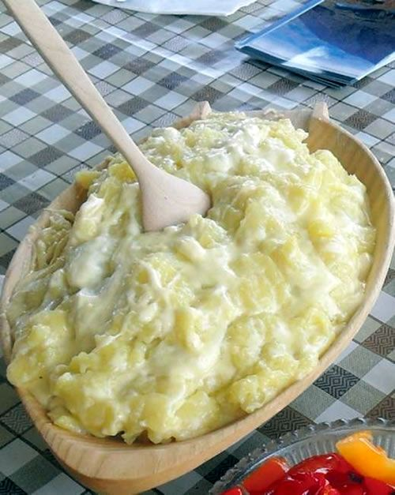

Kachamak

Description
MNE:
Ono sto neke drzave ne znaju jeste da ne moras pravit
kolonije po Aziji i tjerat druge rase da skupljaju prah ispod
nekakvih latica da bi napravio obrok koji ti nepce tjera na orgazam.
A i da vidim tog francuza sto ce pokosit hektar kad mu Beatris spremi puzeva.
ENG:
One of the few dishes that originate from Montenegro is
Kachamak. Simple, yet delicious potato based dish is flavourful
but strong meal inteneded to give Montenegrins enough energy
to successfully complete all their work at their farms. Dont
forget sour milk complements Kachamak greatly.
Ingredients
- Potato
- Corn flour
- Salt
- Water
- Kajmak/cream
- Milk
Steps
- Peel and cut the potatoes into small chunks.
Place the potatoes in a large pot and cover them with water.
Add a pinch of salt to the water.
-
Bring the pot to a boil over medium-high heat.
Reduce the heat and let the potatoes simmer until they are very tender, about 15-20 minutes.
-
Once the potatoes are cooked, do not drain the water.
Use a potato masher or a fork to mash the potatoes directly in the pot with the water.
-
Gradually add the cornmeal to the pot while continuously stirring with a wooden spoon.
Keep stirring to avoid lumps forming and ensure the mixture thickens evenly.
-
Continue to cook and stir the mixture over low heat for about 20-30 minutes,
until the cornmeal is fully cooked and the mixture thickens. It should have a smooth and creamy consistency.
-
Cut the cheese into small pieces and add it to the mixture.
Add the butter to the pot as well.
Stir well until the cheese and butter have melted and are fully incorporated into the kacamak.